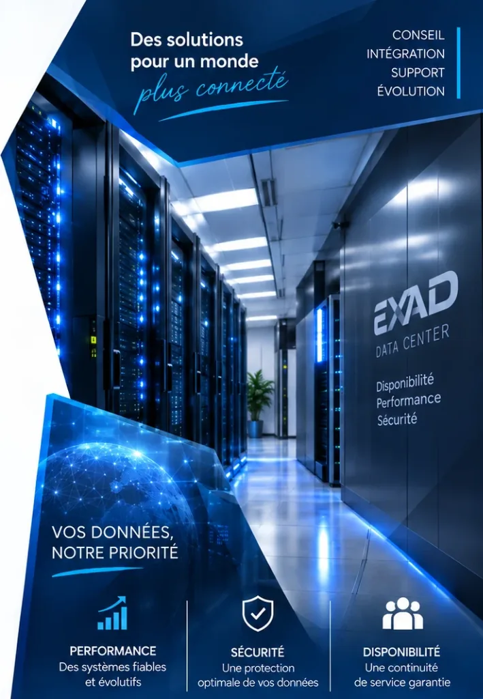
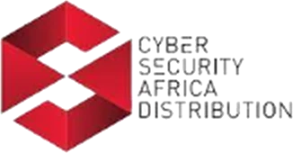
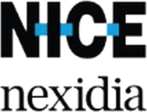
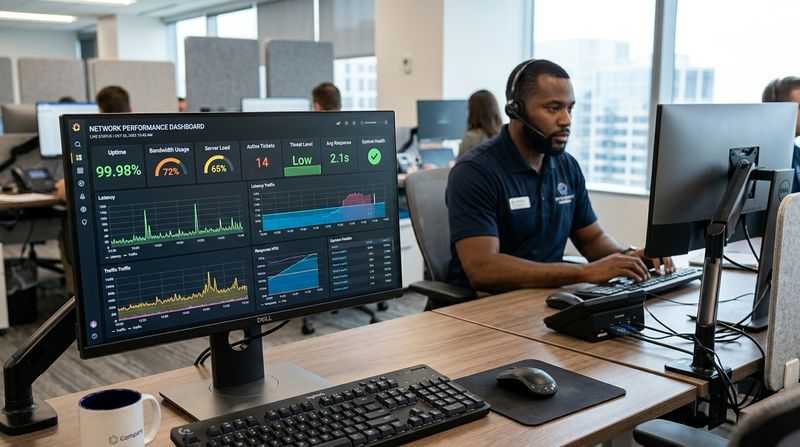
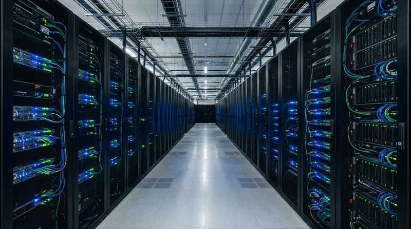
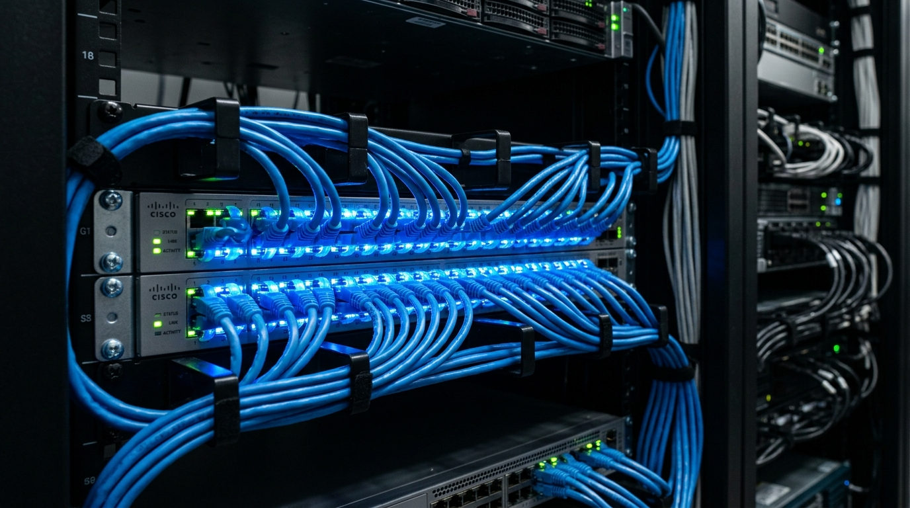
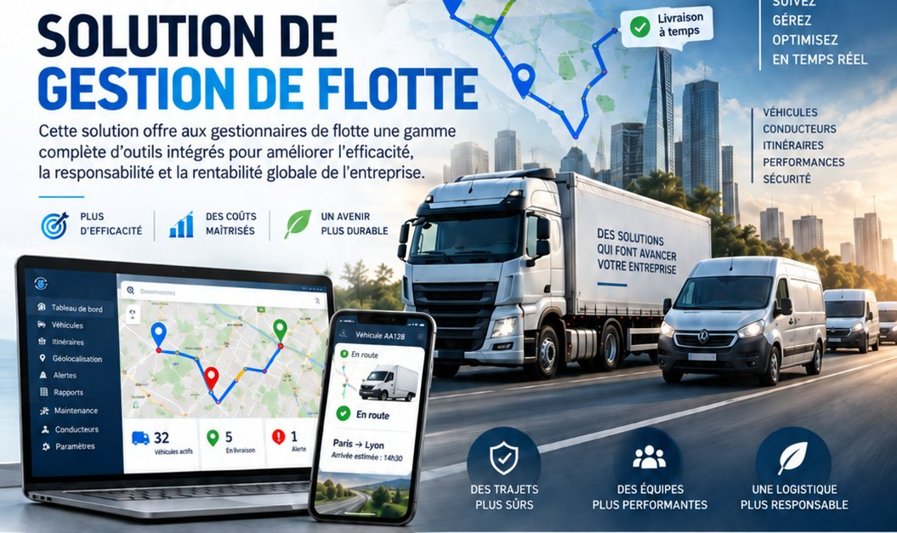
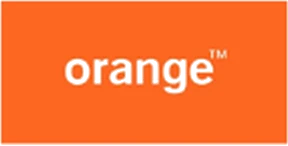
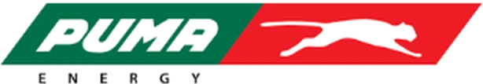
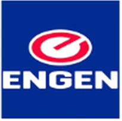

Votre partenaire pour une infrastructure IT de niveau entreprise.
Réseaux, Data Center, cybersécurité, systèmes, développement logiciel et solutions de flotte : EXAD conçoit, déploie et maintient des solutions technologiques adaptées aux objectifs de votre organisation.

Nos partenaires technologiques


Une question sur nos solutions ?
Notre assistant vous répond tout de suite : services, références, coordonnées. Pour un devis, notre équipe prend le relais.
Vos équipes comptent sur leur informatique. EXAD la conçoit, la déploie et la maintient pour qu'elle ne les lâche pas.
Un seul partenaire à chaque étape de votre projet.
Nous partons de vos objectifs, pas d'un catalogue.
Audit de l'existant, analyse des contraintes et choix de l'architecture adaptée : chaque projet commence par comprendre votre activité.
Découvrir notre approcheDes équipes sur le terrain, de Kinshasa à Matadi.
Installation, configuration et tests sur vos sites, en limitant au maximum les interruptions de service.
Voir nos services
Vos systèmes surveillés et maintenus.
Maintenance préventive et corrective, service desk et supervision pour garder vos équipements disponibles.
Maintenance et supervisionUne infrastructure qui grandit avec vous.
Nouveaux sites, montée en capacité, renforcement de la sécurité : nous faisons évoluer votre environnement dans la durée.
Voir nos réalisationsUne couverture technologique complète
EXAD intervient sur les infrastructures critiques et les solutions métier, avec une approche orientée continuité, sécurité et retour sur investissement.

Data Center & Storage
Serveurs, stockage SAN, onduleurs, virtualisation, sauvegarde, supervision et maintenance : nous concevons et maintenons des infrastructures disponibles en continu.
Cybersecurity
NGFW, segmentation, protection des postes et des emails, gestion des vulnérabilités.

Networks & Connectivity
LAN/WAN, fibre, switching, routing, interconnexion de sites et liens de secours.
Managed IT
Infogérance, service desk, postes, systèmes, bases de données et licences.
Software Development
Applications web et mobiles adaptées à vos processus métier.

Fleet & Fuel
Suivi GPS en temps réel, geofencing, identification conducteur, contrôle du carburant et rapports.
La technologie au service de vos objectifs métier.
Depuis 2015, EXAD met son expérience du marché et son expertise technologique au service des entreprises et institutions.
- Excellence, confiance et transparence
- Professionnalisme, éthique et discipline
- Innovation adaptée aux besoins réels
- Approche proactive et valeur ajoutée
- Partenariats avec des acteurs technologiques reconnus
Ils nous font confiance
Banques, opérateurs télécoms, énergie, logistique et institutions publiques s'appuient sur EXAD pour leurs infrastructures critiques.


